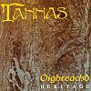

Celtic Lyrics Corner > Artists & Groups > Tannas > Oighreachd > A Fhleasgaich Oig Bi Furachail
|  | A Fhleasgaich Oig Bi Furachail |
| Credits : | Traditional; lyrics by Ewan MacColl; arranged by Tannas |
| Appears On : | Oighreachd |
| Language : | Gàidhlig (Scottish Gaelic) |
| Other Versions : | " Gur Daor, Gur Daor A Cheannaich Mi " by Anna Murray on the Ar Cànan 'S Ar Ceòl compilation |
| Lyrics : | English Translation : |
| Am bruadar seo am faoinsgeul e | The vision I saw, is it a figment |
| No'm faod e a bhith fìor | Or could it possibly be true |
| Do gheallaidhean gun dich'nicheadh tu | That you could forget your promises |
| Air son òr no nì? | For gold or any material thing? |
| Cha tig, cha tig ath-sgeul dhomh air | Never ever will it be repeated |
| Nan tigeadh b'éibhneach mi | Else desolate I should be |
| Ach o'n chaidh 'n t-snaim do sgaoileadh ort | For since you tied the indissoluble knot |
| Dhe'n t-saogh'l seo tha mi sgìth | Of this world I am weary |
| Bu daor, bu daor a cheannaich mi | Dearly, dearly did I buy |
| An sonas nach robh buan | The transient happiness |
| Nuair shaoil mi bhith aig cala | When I thought I was safely in port |
| Chaidh mo philleadh chun a' chuain | I was sent back to sea |
| Mo thruaigh' mi, ciod seo dh'fhairich mi | Alas, what came over me |
| Nach d'aithnich thu na b'luaith? | That I didn't realize sooner? |
| Nuair fhuair fear eile, rùnaich, thu | When another came along desiring you |
| 'S ann dhùisg mi as mo shuain | Only then did I awake from my slumber |
| A fhleasgaich òig bi furachail | Young man, be attentive |
| Aon earal gabh uam féin | And take my advice |
| Na taobh ri té bhios eireachdail | Do not fall for one who is beautiful |
| Mar aithne dhut a beus | But of whose virtue you are unsure |
| Ged gheibh thu'n coslas aingil i | Though she may be angelic in appearance |
| Mas caileag i gun stéidh | If she is not of sound character |
| Gun dean i'n tùs dhiot amadan | She will make a fool of you |
| Is aithreachas 'na dhéidh | And you will live to regret it |
| Am bruadar seo am faoinsgeul e | The vision I saw, is it a figment |
| No'm faod e a bhith fìor | Or could it possibly be true |
| Do gheallaidhean gun dich'nicheadh tu | That you could forget your promises |
| Air son òr no nì? | For gold or any material thing? |
| Cha tig, cha tig ath-sgeul dhomh air | Never ever will it be repeated |
| Nan tigeadh b'éibhneach mi | Else desolate I should be |
| Ach o'n chaidh 'n t-snaim do sgaoileadh ort | For since you tied the indissoluble knot |
| Dhe'n t-saogh'l seo tha mi sgìth | Of this world I am weary |